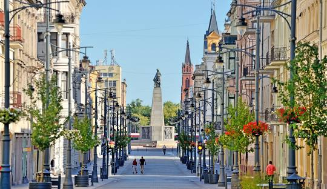
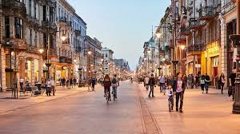
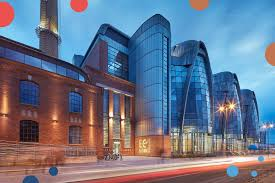
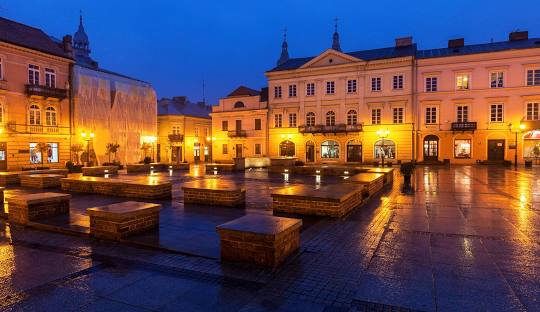
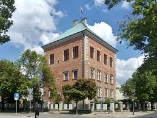
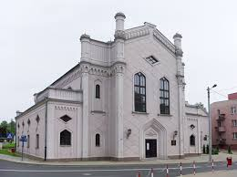

Łódzkie
Najważniejsze miasta
Łódź
Łódź – miasto na prawach powiatu w środkowej Polsce. Większość dzisiejszej Łodzi znajduje się w historycznej ziemi łęczyckiej, a niewielka część miasta w ziemi sieradzkiej. Ulica Piotrkowska
Najsłynniejsza ulica Łodzi, pełna zabytkowych kamienic, kawiarni, restauracji i murali. To centrum życia kulturalnego i turystycznego miasta.
EC1 – Centrum Nauki i Techniki
Interaktywne muzeum mieszczące się w dawnej elektrowni, pełne eksperymentów i nowoczesnych instalacji. To świetne miejsce dla miłośników nauki i techniki.
Piotrków Trybunalski
Piotrków Trybunalski – miasto na prawach powiatu w centralnej Polsce. Piotrków był miastem królewskim w starostwie piotrkowskim w powiecie piotrkowskim województwa sieradzkiego w końcu XVI wieku. Zamek Królewski
Niewielka, ale ważna rezydencja królewska, w której obradowały sejmy Rzeczypospolitej. Dziś mieści muzeum, prezentujące historię miasta i regionu.
Wielka Synagoga
Jeden z najcenniejszych zabytków żydowskich w Polsce, świadectwo wielokulturowej przeszłości miasta. Choć nie pełni już funkcji religijnej, jej architektura zachwyca turystów.